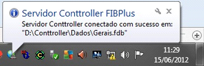

Estação FIBSERVER EXECUTAVEL - LOCAL |
  
|
Estação FIBSERVER EXECUTAVEL - LOCAL |
|
2 – CONFIGURAÇÃO Conttroller_FIBServer LOCAL EXECUTÁVEL (ESTAÇÃO);
ESTA ESTRUTURA SÓ DEVERÁ SER UTILIZADA CASO O CLIENTE POSSUA ESTRUTURA DE ACESSO AO SISTEMA VIA WIRELESS (WIFI), NÃO DEVENDO SER UTILIZADA A CONFIGURAÇÃO POR ATALHOS DIRETO DO SERVIDOR.
OBS.: O fbclient.dll na versão 2.5 deverá estar na pasta system32 e/ou na SysWOW64 e ...\Conttroller\Servidor.

As estações que irão utilizar o Conttroller_FIBServer LOCAL, terão que possuir a estrutura de pastas:
Passo 01: EXECUTANDO o Conttroller_FIBServer
Na aba Propriedades configurar seguinte forma:
Endereço IP: 127.0.0.1
Porta: 9000
Modo: Escritório Central
Caminho para BD Local: Informar o caminho da Base no servidor,

Passo 02: CONFIGURANDO O BANCO DE DADOS
Ao clicar no botão aparecerá a janela abaixo que deverá ser configurada da seguinte forma:
Server: IP do Servidor
Database: Caminho da base no Servidor
Username: SYSDBA
Password: masterkey

Acessar a pasta ...\Conttroller\Sistemas e abrir o arquivo conttroller.ini configurando desta forma;
[Parametros]
Banco=0
BlocoDeDados=100
TabularComEnter=1
[0]
descricao=Adicionar Novo Servidor
ip=127.0.0.1
porta=9000
[Servidores]
porta=9000
endereco=127.0.0.1
Ao término da configuração do banco, clicar em OK. Ao voltar à janela anterior clicar em 
Caso a configuração tenha sido executada com sucesso, aparecerá a seguinte janela na barra de tarefas informando que o banco de dados está conectado:

Após ter exibido esta mensagem pode executar o High-Commerce.
Lembrando que nessa configuração, caso o Conttroller_FIBServer do Servidor TRAVE OU desconectE, nenhuma das ESTAÇÕES que possuam o Conttroller_FIBServer LOCAL ficarão sem acessar o sistema, pois elas se conectam direto ao banco de dados do Servidor.